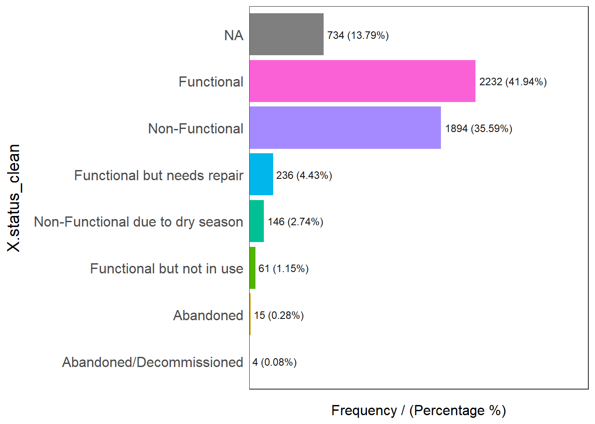
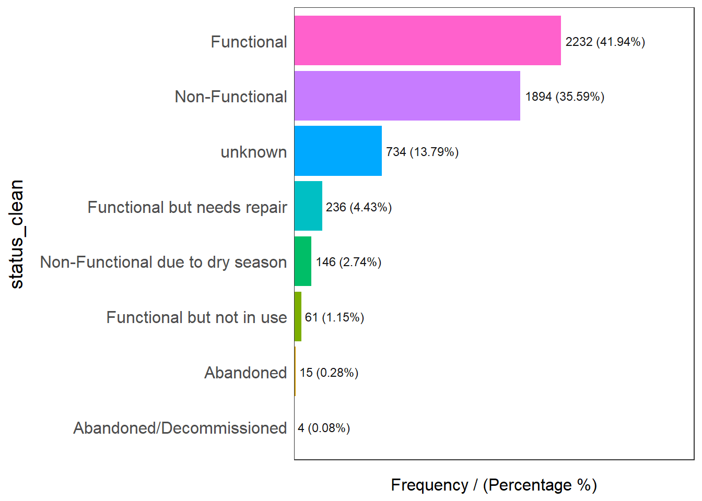
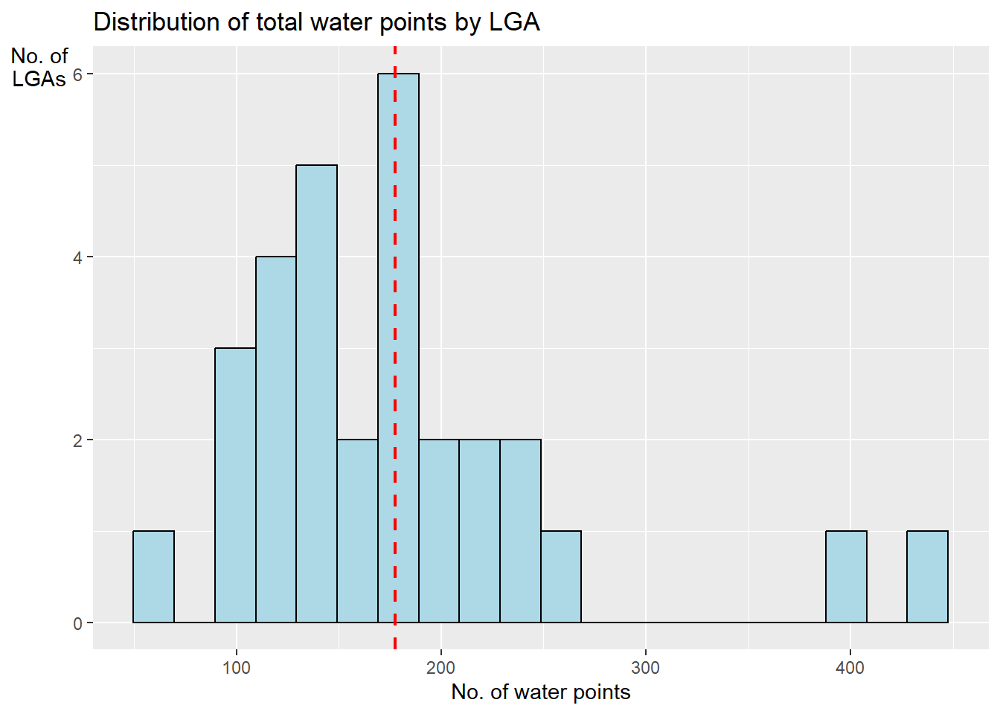

In-class Exercise 4: 2nd Order Spatial Point Patterns Analysis Methods
1 Import R Packages
2 Import Datasets
2.1 WPdx+ Dataset
2.2 Nigeria Osun State
NGA <- st_read(dsn = "data/geospatial/nga_adm_osgof_20190417",
layer = "nga_admbnda_adm2_osgof_20190417") %>%
st_transform(crs = 26392)Reading layer `nga_admbnda_adm2_osgof_20190417' from data source
`C:\deadline2359\IS415-GAA\Take-home_Ex\Take-home_Ex01\data\geospatial\nga_adm_osgof_20190417'
using driver `ESRI Shapefile'
Simple feature collection with 774 features and 16 fields
Geometry type: MULTIPOLYGON
Dimension: XY
Bounding box: xmin: 2.668534 ymin: 4.273007 xmax: 14.67882 ymax: 13.89442
Geodetic CRS: WGS 843 Data Handling
3.1 WPdx+ Dataset
# A tibble: 5,557 × 71
row_id `#source` #lat_…¹ #lon_…² #repo…³ #stat…⁴ #wate…⁵ #wate…⁶ #wate…⁷
<dbl> <chr> <dbl> <dbl> <chr> <chr> <chr> <chr> <chr>
1 429123 GRID3 8.02 5.06 08/29/… Unknown <NA> <NA> Tapsta…
2 70566 Federal Minis… 7.32 4.79 05/11/… No Protec… Well Mechan…
3 70578 Federal Minis… 7.76 4.56 05/11/… No Boreho… Well Mechan…
4 66401 Federal Minis… 8.03 4.64 04/30/… No Boreho… Well Mechan…
5 422190 GRID3 7.87 4.88 08/29/… Unknown <NA> <NA> Tapsta…
6 422064 GRID3 7.7 4.89 08/29/… Unknown <NA> <NA> Tapsta…
7 65607 Federal Minis… 7.89 4.71 05/12/… No Boreho… Well Mechan…
8 68989 Federal Minis… 7.51 4.27 05/07/… No Boreho… Well <NA>
9 67708 Federal Minis… 7.48 4.35 04/29/… Yes Boreho… Well Mechan…
10 66419 Federal Minis… 7.63 4.50 05/08/… Yes Boreho… Well Hand P…
# … with 5,547 more rows, 62 more variables: `#water_tech_category` <chr>,
# `#facility_type` <chr>, `#clean_country_name` <chr>, `#clean_adm1` <chr>,
# `#clean_adm2` <chr>, `#clean_adm3` <chr>, `#clean_adm4` <chr>,
# `#install_year` <dbl>, `#installer` <chr>, `#rehab_year` <lgl>,
# `#rehabilitator` <lgl>, `#management_clean` <chr>, `#status_clean` <chr>,
# `#pay` <chr>, `#fecal_coliform_presence` <chr>,
# `#fecal_coliform_value` <dbl>, `#subjective_quality` <chr>, …3.1.0.1 Create Simple Feature DataFrame
4 Geospatial Data Cleaning
4.1 Excluding Redundant Fields
Simple feature collection with 30 features and 4 fields
Geometry type: MULTIPOLYGON
Dimension: XY
Bounding box: xmin: 176503.2 ymin: 331434.7 xmax: 291043.8 ymax: 454520.1
Projected CRS: Minna / Nigeria Mid Belt
First 10 features:
ADM2_EN ADM2_PCODE ADM1_EN ADM1_PCODE geometry
1 Aiyedade NG030001 Osun NG030 MULTIPOLYGON (((213526.6 34...
2 Aiyedire NG030002 Osun NG030 MULTIPOLYGON (((212542.6 40...
3 Atakumosa East NG030003 Osun NG030 MULTIPOLYGON (((265746.8 37...
4 Atakumosa West NG030004 Osun NG030 MULTIPOLYGON (((248871.4 40...
5 Boluwaduro NG030005 Osun NG030 MULTIPOLYGON (((266092.2 43...
6 Boripe NG030006 Osun NG030 MULTIPOLYGON (((255072.5 43...
7 Ede North NG030007 Osun NG030 MULTIPOLYGON (((236386.9 41...
8 Ede South NG030008 Osun NG030 MULTIPOLYGON (((236386.9 41...
9 Egbedore NG030009 Osun NG030 MULTIPOLYGON (((220756 4317...
10 Ejigbo NG030010 Osun NG030 MULTIPOLYGON (((214422.1 42...4.2 Checking for Duplicated Name
You can see that no duplicated LGAs in the Osun state.
5 Data Wrangling for Water Point Data

X.status_clean frequency percentage cumulative_perc
1 Functional 2232 41.94 41.94
2 Non-Functional 1894 35.59 77.53
3 <NA> 734 13.79 91.32
4 Functional but needs repair 236 4.43 95.75
5 Non-Functional due to dry season 146 2.74 98.49
6 Functional but not in use 61 1.15 99.64
7 Abandoned 15 0.28 99.92
8 Abandoned/Decommissioned 4 0.08 100.00wp_sf_nga <- wp_sf %>%
rename(status_clean = 'X.status_clean') %>%
select(status_clean) %>%
mutate(status_clean = replace_na(
status_clean, "unknown" # rename NA to be called "unknown"
))
freq(data = wp_sf_nga,
input = 'status_clean')
status_clean frequency percentage cumulative_perc
1 Functional 2232 41.94 41.94
2 Non-Functional 1894 35.59 77.53
3 unknown 734 13.79 91.32
4 Functional but needs repair 236 4.43 95.75
5 Non-Functional due to dry season 146 2.74 98.49
6 Functional but not in use 61 1.15 99.64
7 Abandoned 15 0.28 99.92
8 Abandoned/Decommissioned 4 0.08 100.005.1 Extract Water Point Data
5.2 Performing Point-in-Polygon Count
NGA_wp <- NGA %>%
mutate('total_wp' = lengths(
st_intersects(NGA, wp_sf_nga))) %>%
mutate('wp_functional' = lengths(
st_intersects(NGA, wp_functional))) %>%
mutate('wp_nonfunctional' = lengths(
st_intersects(NGA, wp_nonfunctional))) %>%
mutate('wp_unknown' = lengths(
st_intersects(NGA, wp_unknown)))
NGA_wpSimple feature collection with 30 features and 8 fields
Geometry type: MULTIPOLYGON
Dimension: XY
Bounding box: xmin: 176503.2 ymin: 331434.7 xmax: 291043.8 ymax: 454520.1
Projected CRS: Minna / Nigeria Mid Belt
First 10 features:
ADM2_EN ADM2_PCODE ADM1_EN ADM1_PCODE geometry
1 Aiyedade NG030001 Osun NG030 MULTIPOLYGON (((213526.6 34...
2 Aiyedire NG030002 Osun NG030 MULTIPOLYGON (((212542.6 40...
3 Atakumosa East NG030003 Osun NG030 MULTIPOLYGON (((265746.8 37...
4 Atakumosa West NG030004 Osun NG030 MULTIPOLYGON (((248871.4 40...
5 Boluwaduro NG030005 Osun NG030 MULTIPOLYGON (((266092.2 43...
6 Boripe NG030006 Osun NG030 MULTIPOLYGON (((255072.5 43...
7 Ede North NG030007 Osun NG030 MULTIPOLYGON (((236386.9 41...
8 Ede South NG030008 Osun NG030 MULTIPOLYGON (((236386.9 41...
9 Egbedore NG030009 Osun NG030 MULTIPOLYGON (((220756 4317...
10 Ejigbo NG030010 Osun NG030 MULTIPOLYGON (((214422.1 42...
total_wp wp_functional wp_nonfunctional wp_unknown
1 389 157 154 78
2 175 89 57 29
3 223 98 92 33
4 246 111 103 32
5 129 63 51 15
6 177 79 85 13
7 216 141 50 25
8 146 72 39 35
9 142 63 44 35
10 434 274 126 34ggplot(data = NGA_wp,
aes(x = total_wp)) +
geom_histogram(bins=20,
color="black",
fill="light blue") +
geom_vline(aes(xintercept=mean(
total_wp, na.rm=T)),
color="red",
linetype="dashed",
size=0.8) +
ggtitle("Distribution of total water points by LGA") +
xlab("No. of water points") +
ylab("No. of\nLGAs") +
theme(axis.title.y=element_text(angle = 0))